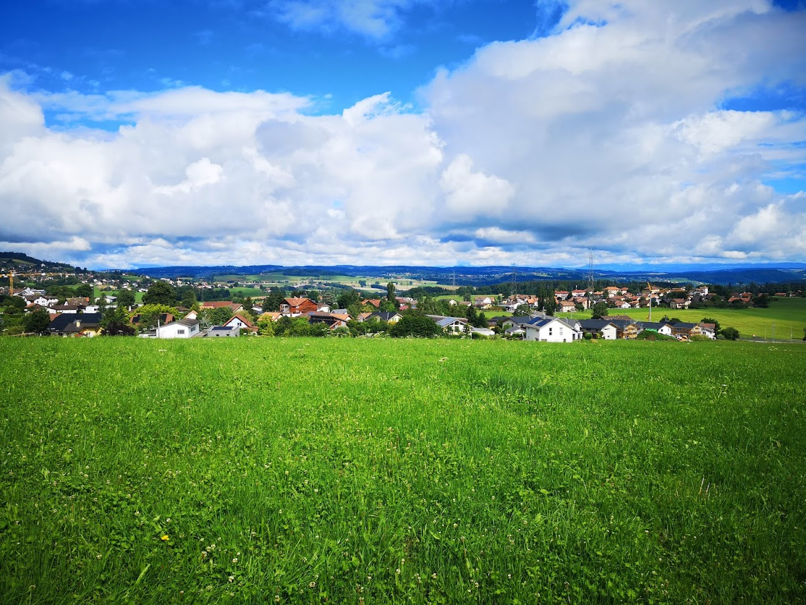
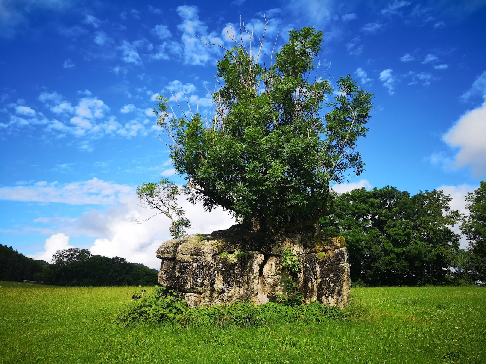

Pully egy svájci község, Vaud kantonban, Lavaux-Oron kerületben. Ez Lausanne városának egyik keleti külvárosa, a Genfi-tó partján és a Lavaux szőlőültetvények lábánál, a Vevey és Montreux felé vezető úton található.
A Chaplin szoborral szemben egy meghökkentő alkotás emelkedik ki a vízből: egy nyolcméteres, gigantikus villa, melyet az Alimentarium, a Nestlé egykori központjában működő Élelmiszer-múzeum tizedik évfordulójára állítottak, s mára Vevey szimbóluma lett.
A Nestlé S.A. egy svájci üdítőket és élelmiszereket gyártó multinacionális vállalat. Központja Vevey-ben, Svájcban található. Bevételek és egyéb adatok alapján 2014 óta a világ legnagyobb élelmiszergyártója. A Nestlé termékei között találunk csecsemőtápláló, illetve egészségügyi élelmiszereket továbbá ásványvizeket, reggelizőpelyheket, kávét, kakaót és teát, édességeket, tejtermékeket, jégkrémet, fagyasztott ételeket és állateledeleket.
Bossonnens Vevey-től északra Fribourg kantonban található a Vevey-Oron műút mentén 750 m tszf. magasságban. Lakossága 2020-ban 1501 fő. A főként mezőgazdasági területekkel körülvett Bossonnens többnyire mezőgazdasági falu, sokan a közeli Veveyben, Montreux-ben vagy Lausanne-ban dolgoznak. A községben van óvoda és 6 osztályos általános iskola.
A Chaplin szoborral szemben egy meghökkentő alkotás emelkedik ki a vízből: egy nyolcméteres, gigantikus villa, melyet az Alimentarium, a Nestlé egykori központjában működő Élelmiszer-múzeum tizedik évfordulójára állítottak, s mára Vevey szimbóluma lett.
A Nestlé S.A. egy svájci üdítőket és élelmiszereket gyártó multinacionális vállalat. Központja Vevey-ben, Svájcban található. Bevételek és egyéb adatok alapján 2014 óta a világ legnagyobb élelmiszergyártója.